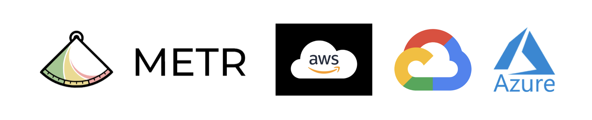
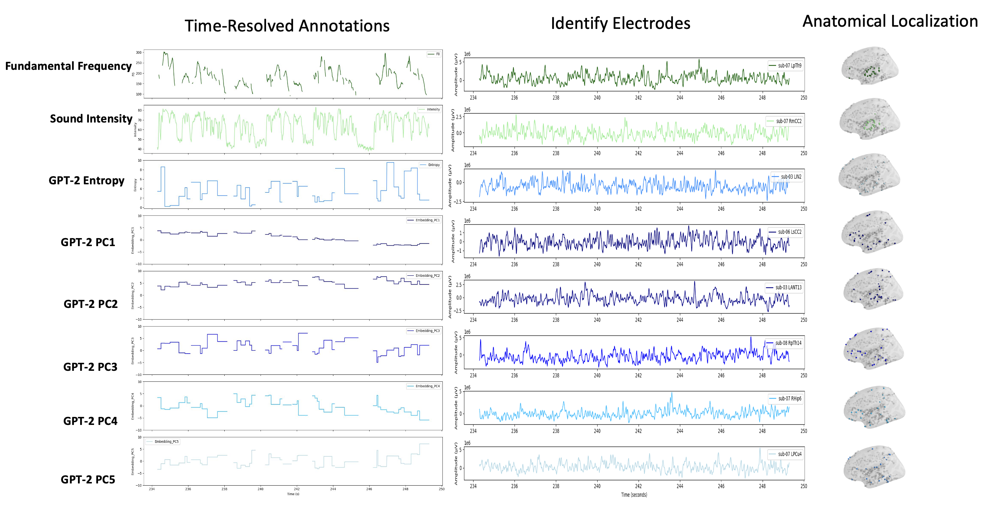
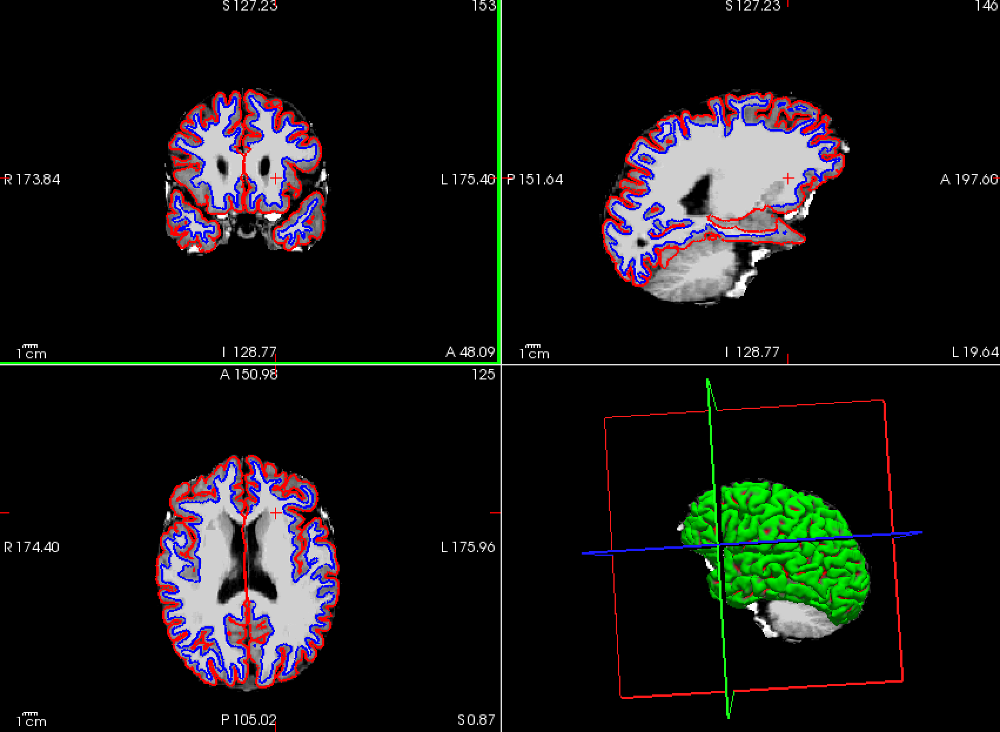

Role: Research Scientist, Stanford University, Laboratory of Speech Neuroscience
Education:
Location: San Francisco, CA
Home: New York, NY
I developed a novel model evaluation framework for evaluating model preferences for integrating with cloud service providers (GCP, AWS, Azure, etc.).
If you are interested in contributing, check out my Github repository here.
I have built a repository for preprocessing and analyzing stereotactic electroencephalography (sEEG) data aligned with audio and language features in a speech task.
 If you are a researcher in the field, feel free to review my project and code here.
In this repository, I maintain a collection of scripts and guides for visualizing intracranial EEG (iEEG) electrodes and processing T1-weighted MRI images using FreeSurfer.
This project is designed to help researchers accurately measure electrode depth from the cortical surface and distinguish between electrodes in grey matter and white matter. View the steps here.
This notebook explores the concepts of irreducibility and aperiodicity in Markov Chains, using examples such as zebra finch sequence generation, genetic drift, and applications in decision-making. You can view the Jupyter notebook directly here.
Mechanistic Interpretability
Applications of sparse autoencoders to identify non-trivial features in biological signals.
Integrating Recording Modalities
Developing techniques for aligning measurements across fMRI, MEG, EEG, and spiking activity to enhance the interpretability of decoding models.
Text Transcription of Biological Signals
Generating transcriptions for biological signals into text for model inputs and steerability.
Policy Design and Implementation
Leveraging insights from artificial neural networks to inform adaptable policy development and implementation.
Travel and Live Music
I love traveling and exploring new venues for live music, particularly the music of the Grateful Dead.
Check out recordings here: Grateful Dead Archive.
Random Walks Through Libraries and Bookstores
I enjoy random walks through the stacks of historic libraries, finding my way towards new books and ideas.
Personal Favorite: Uris Library, Cornell University, Ithaca, NY
Long-Horizon Predictions
I am working in preparation for a world where intelligent systems increasingly take over making critical decisions in our lives.
My focus is on ensuring that this future world remains vibrant, exciting, and filled with opportunities for future generations.
While I’m focused on these long-term outcomes, there are three primary goals in sight:
1. New York Jets winning a Super Bowl (Rodgers holding a Lombardi trophy)
2. New York Knicks securing an NBA championship (Brunson gets a statue)
3. Secure deployment of AGI
I’m open to friendly wagers on which of these events we’ll see first!